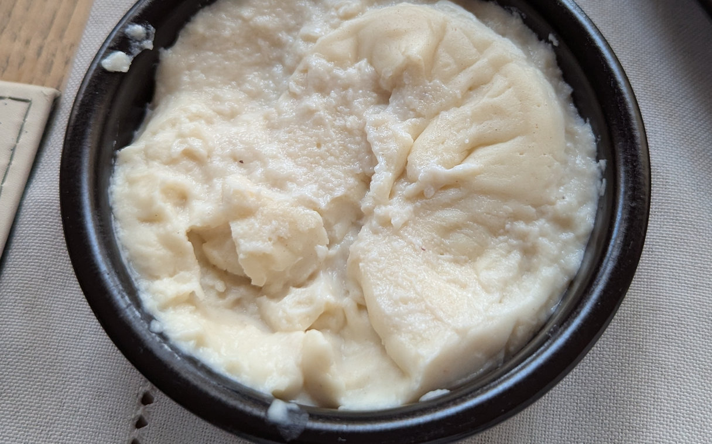

Bread Sauce
 Serves 4
Serves 4 Vegetarian/Vegan
Vegetarian/Vegan

300mlmilk25gbutter½onion , chopped6cloves6peppercorns2 clovesgarlic1bay leaf3thyme sprigs50gwhite breadcrumbs4 tbspsingle creampinchnutmeg , freshly grated
Simmer the milk, butter, onion, cloves, peppercorns, garlic and herbs in a pan for 20 mins.
Strain and return the liquid to the pan.
Add the breadcrumbs and simmer for 3-4 mins.
Stir in the cream and, using an immersion blender, blend into a smoother sauce.
Add nutmeg, season and serve.
Can be made up to 3 days in advance and heated up on the hob or microwave on Medium for 3 mins.